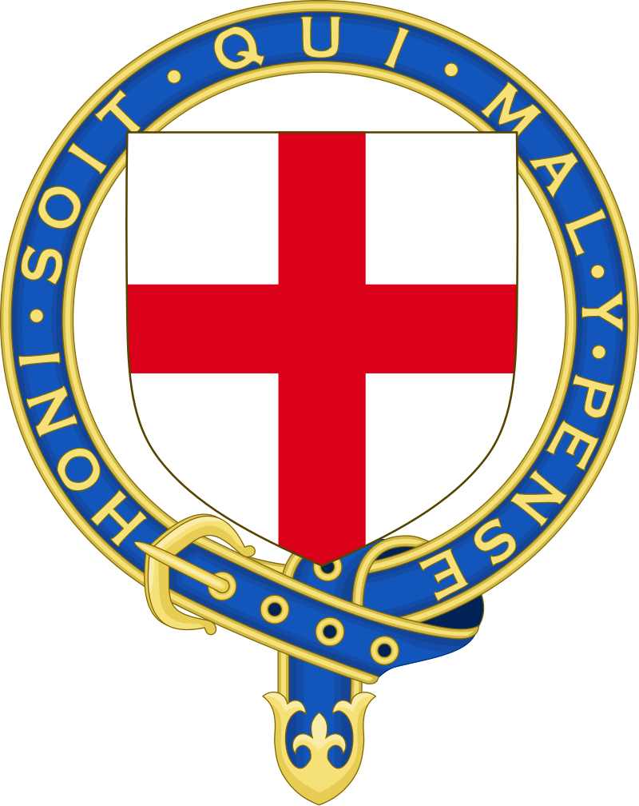
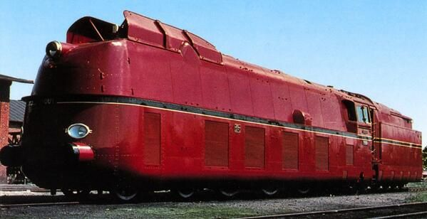

Klasu A4 konstruisao je Najdžel Gresli za potrebe snažnih aerodinamičnih vozova velikih brzina. Testirana u vazdušnom tunelu, njena aerodinamična linija i velika snaga omogućavale su klasi A4 postizanje brzina većih od 100 milja na sat (160 km/h), mada je u svakodnevnom saobraćaju retko dostizala tu brzinu. Dok je u doba British Railways-a, redovna brzina vozova koje su vukle parne lokomotive bila ograničena na 90 mph (milja na sat), pre rata A4-ke su jurile znatno preko 90 mph da bi se održavao red vožnje na vozovima kao što su bili Silver Jubilee (srebrni jubilej) i The Coronation (krunisanje), čije su lokomotive na mnogim deonicama dostizale 100 mph. Mallard je prevalio skoro milion i po milja (2,4 miliona kilometara) pre nego što je povučen iz upotrebe 1963. godine.
Lokomotiva je dugačka 70 stopa (21 m) i teška 165 t, uključujući tender. Ofarbana je "LNER
garter

The Order of the Garter, Red podvezice je viteški red koji je ustanovio Edvard III 1348. godine koji se smatra najprestižnijim
britanskim viteškim redom u Engleskoj a kasnije i u Ujedinjenom Kraljevstvu. Posvećen je liku i delu engleskog sveca Svetog Đorđa.
" plavom bojom sa crvenim točkovima i čeličnim ivicama. Danas je deo nacionalne kolekcije britanskog Nacionalnog železničkog muzeja u Jorku.
Svetski rekord u brzini za parne lokomotive od 126 mph (203 km/h), koji drži Mallard, postavljen je 3. jula 1938. na blagoj nizbrdici
Stoke Bank-a južno od Grantham-a na
East Coast Main Line
pruzi, a najveća brzina zabeležena je kod miljokaza 90¼ (table pored pruge ili puta koja označava pređeni put u miljama), između Little Bytham-a i Essendine-a. Time je srušen rekord koji je držala nemačka lokomotiva
DRG Class 05

The Deutsche Reichsbahn's Class 05 je klasa od tri nemačke lokomotive za ekspresne putničke vozove sa rasporedom točkova 4-6-4, koje su
korišćene u srednjoj Evropi i bile su deo DRG-ove standardne serije lokomotiva.
002 koji je iznosio 124,5 mph (200,4 km/h). Pokušaj obaranja rekorda je ostvaren tokom isptivanja nove brze kočnice (the Westinghouse "QSA" kočnica).